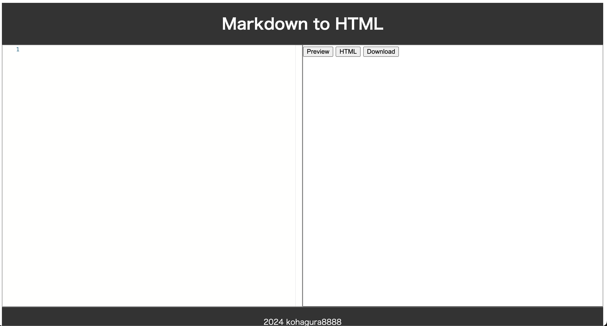

Markdown to HTML
ソースコードへのリンク
プロジェクトの概要
Markdown から HTML への変換を行うアプリケーションである。Recursionのバックエンドプロジェクト・Dynamic Web Serversの課題の制作物である。
使用した技術スタック
HTML、CSS、PHP
機能の詳細
エディタ部分にMarkdownのテキストを入力する
Previewボタンを押すとHTMLが反映された出力がみれる
HTMLボタンを押すとMarkdownのテキストがHTMLのコードに変換されたテキストが出力される
Downloadボタンを押すとMarkdownのテキストがHTMLのコードに変換されたものをダウンロードできる
学んだことや挑戦
ブラウザからのリクエストをサーバ側で処理するということを初めて行った。
AWSのEC2を使用した。その際のnginxの設定に苦戦した。
また、ドメインも取得し、サブドメインを設定して公開した。
バックエンドっぽいことを初めてしたのでとても楽しく開発できた。